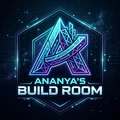

Engineer by craft, creator by nature.

By day I'm a software engineer at LinkedIn. Before that: eBay, AI research, a master's in Intelligent Systems, and a mathematics degree. I turn insights into impact — across distributed systems, AI agents, and the apps I ship after hours. Off the clock, I write, and I dance.
Full history on LinkedIn ↗01LinkedInSoftware EngineerSan Jose, CA — Current
Building at LinkedIn, with a focus on AI agents and harness engineering, generative AI and language models, and agent reliability.
02eBay IncSoftware Engineer 2San Jose, CA
Worked with cross-functional teams across product, development, and design — designing, developing, and shipping complex multi-tier distributed software systems end-to-end to solve customer problems. Invent Week hackathon winner and Leadership Choice Award recipient.
03DLRL Summer SchoolMila · CIFAR · Amii · VectorMontreal, Canada
Selected for the Deep Learning + Reinforcement Learning Summer School — one of the few chosen from applicants across 88 countries, jointly hosted by Mila, CIFAR, the Alberta Machine Intelligence Institute, and the Vector Institute.
04AI Institute, University of South CarolinaResearch Intern, AISouth Carolina
Developed a novel approach to object detection as a research intern in artificial intelligence.
- eBay Invent Week hackathon winner, 2023 and 2024
- eBay Leadership Choice Award, 2023
- UT Dallas Master's Summer Research Fellowship, 2020
- Jonsson School Graduate Study Scholarship, 2018
- Selected for the DLRL Summer School 2020 from applicants across 88 countries
- 2020 CRA-WP Grad Cohort for Women participant
- CBSE Certificate of Merit in all subjects; top 1% of all examinees, 2010 and 2012
01
Ananya's Build RoomNewsletterOn Substack
A newsletter about building apps, exploring ideas, and the decisions behind shipping them.
02Articles on LinkedInEssaysOngoing
Recent pieces on engineering and building:
- "Harness, Loop, and Graph Engineering: How to Tell Which One You Actually Need"
- "You Don't Have a Discipline Problem. You Have a Goals Problem."
- "The Uncomfortable Truth About Why Things Sell"
03Top Medium publicationsData science & AI writingWriter
A writer for some of the top publications on Medium:
- Towards Data Science
- The Startup
- Analytics Vidhya
- Towards AI
04 Meta MindsNewsletterEarlier work
Meta MindsNewsletterEarlier work
An earlier newsletter on AI, technology, and productivity.
Dance & performance
A decade of choreographed performances (2011–2019) — Durga Pooja and Diwali cultural festivals, and university events at the University of South Carolina. The performances live on my YouTube channel.
AI, pointed at good
The domains I keep coming back to: AI for social good, AI for climate change, AI for health, and explainable AI. It's the thread connecting the research years to the apps I build now.
Have something in mind?
A collaboration, an idea, or just a hello.
I'd love to hear it.